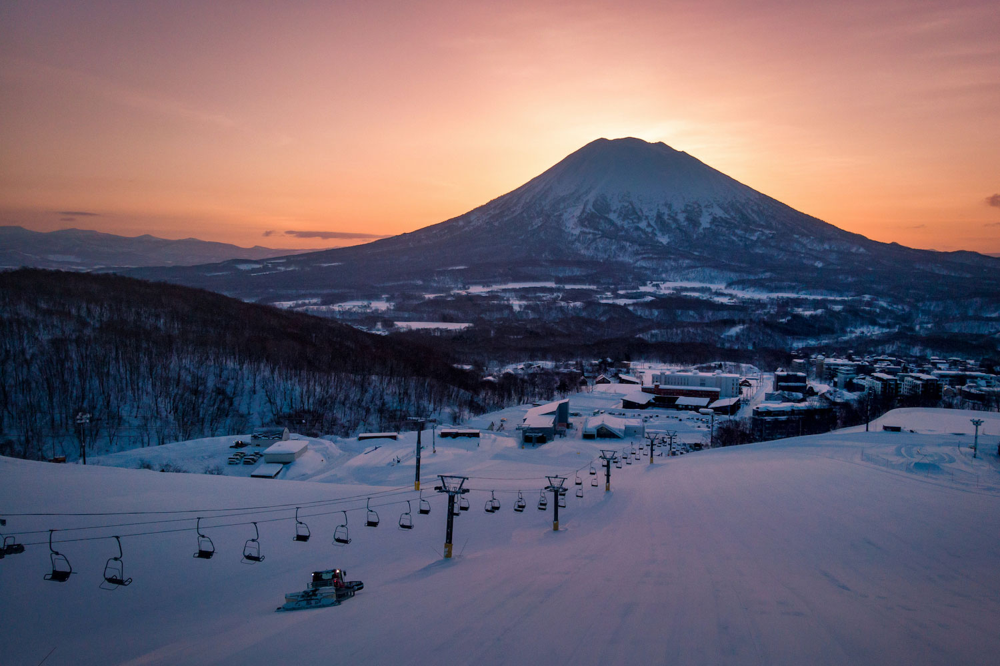
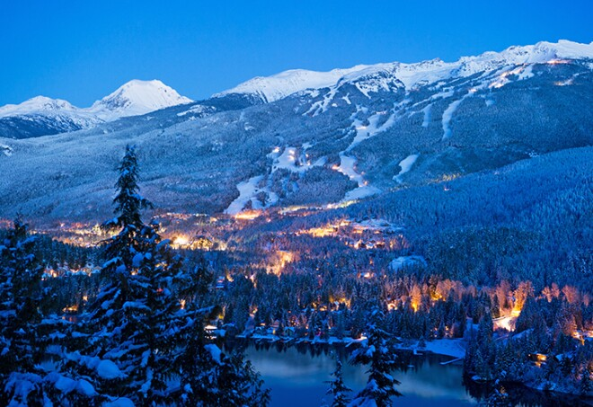

Here is a page about my interests:
I like playing videogames, basketball, and ultimate. I like watching football, basketball, soccer, sometimes baseball and hockey, and Formula 1. I love listening to music. My favorite song right now is Pray For Me by Kendrick Lamar and The Weeknd. Click to see the Spotify QR code if you want to listen to it.
I like listening to music by The Weeknd, David Kushner, Drake, Bad Bunny, Imagine Dragons, and more. I don't watch that many television shows but some of my favorites are: Stranger Things, Formula 1: Drive To Survive, The Grand Tour, Band of Brothers, The Pacific, Blue Planet II, Our Planet, Planet Earth 1, 2, and 3, Only Murders in the Building, Umbrella Academy, and Masterchef. I watch a decent amount of movies, some of my favorites are: Oppenheimer, Air, Interstellar, Inception, The Dark Knight, The Dark Knight Rises, The Joker, It, Founder, Dune 1 and 2, Black Panther 1 and 2, Pirates of the Caribbean: Dead Man's Chest, Star Wars Episode IV: Return of the Jedi, Casino Royale, No Time to Die, Knives Out, and Glass Onion, to name a few.
Some hobbies I have are skiing, solving Rubik's cubes, and building computers and mechanical keyboards. I love watching Youtube videos about all of these topics as well as keeping up to date with news related to my interests.
Skiing is probably my favorite sport and I have been skiing in many different places. I have been to Jackson Hole, Park City, Niseko, Whistler Blackomb, Big Sky, and Schweitzer. My favorite place to ski is either Whistler Blackomb in Canada, or Niseko in Japan. I have been skiing since I was 3 and can ski double blacks with ease. I enjoy skiing the terrain park, but I am not very good and I don't have the nerves or skill to do cool tricks like baackflips or 720's.
 